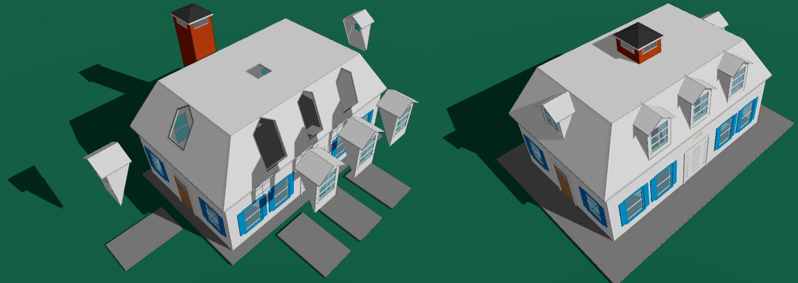
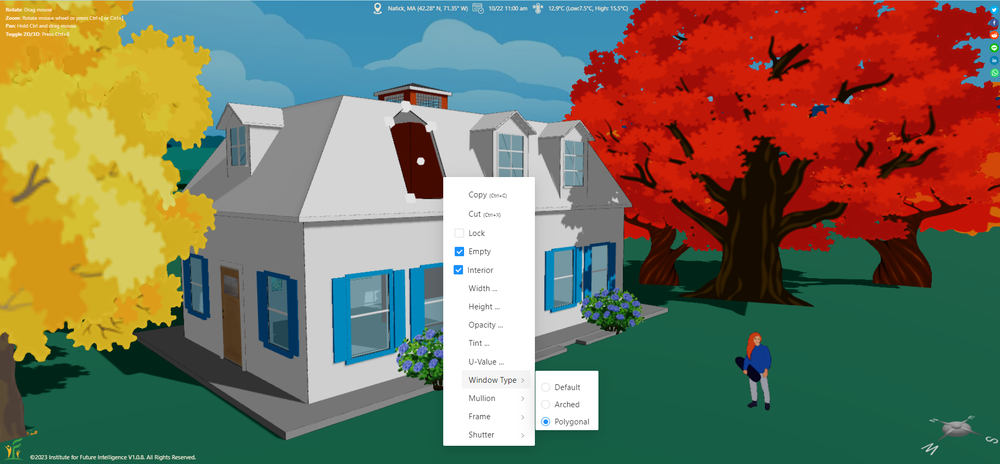
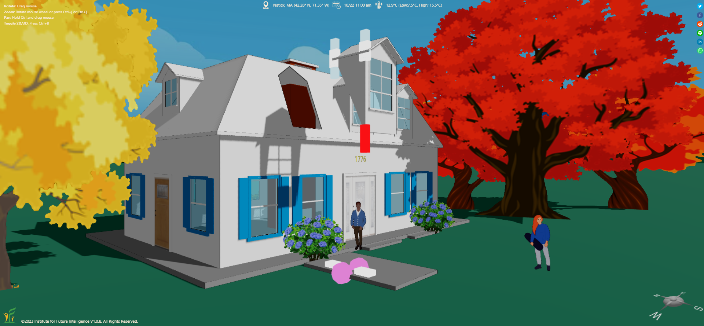
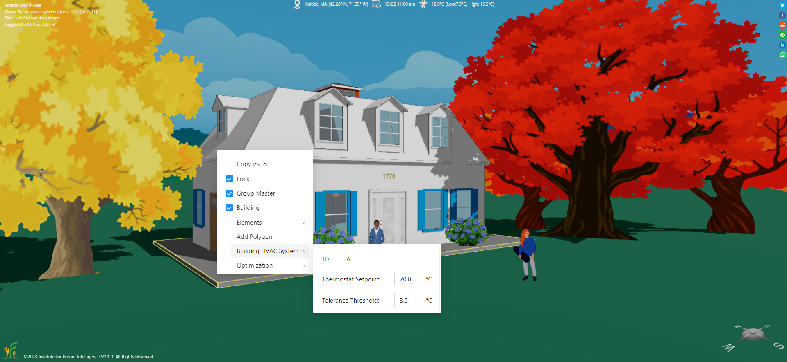
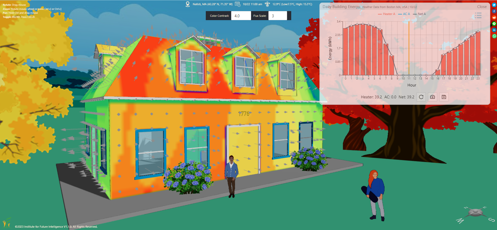
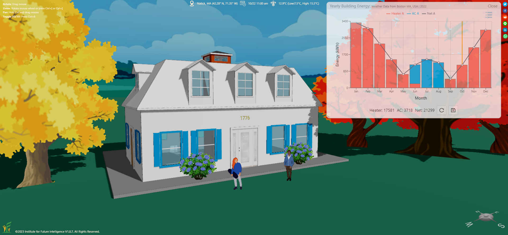

Designing Buildings: Energy Analysis for Complex Buildings
Defining thermal envelopes and HVAC zones so that Aladdin can simulate the energy performance of irregular, multi-foundation buildings.
In a previous article, we show you a variety of design factors that affect the heating and cooling energy use of a building. But we use simple buildings in that article as examples. In reality, a building may have a very complex shape, making its energy analysis more complicated. This article will walk you through how to analyze the energy consumption of a complex building.
What is a complex building?
In Aladdin, a complex building consists of multiple substructures that are assembled to achieve certain architectural effects. Each substructure is "housed" on top of a foundation that can be moved, rotated, or resized for assembly in the three-dimensional space. The following image shows an anatomy of a complex house comprising a main structure with a mansard roof, five dormers each with a window on a gable end, and a chimney in the middle of the house.

Defining the thermal envelope
The first step to perform the thermal analysis of a complex building is to define its thermal envelope, which is part of its building envelope. The thermal envelope is the interface via which the building exchanges energy with the outside through the three mechanisms of heat transfer: conduction, convection, and radiation. In Aladdin, this procedure involves removing surfaces that are not part of the thermal envelope. This is because constructing a complex building in Aladdin may result in extra surfaces that do not belong to the thermal envelope (unfortunately, Aladdin does not provide an automatic surface removal tool at this point). So this procedure has to be done manually with caution (and with an understanding of building science, of course).

For example, the intersection area on a roof with a dormer must be subtracted from the roof. This can be done by adding a window to the roof and then setting it to be "Empty," as shown above. If the hole is not rectangular, you may need to use a polygonal window as in this example. In addition, the window should also be set to be "Interior," meaning that it should not be treated as part of the thermal envelope (because Aladdin does allow an empty window to be on the building envelope, so this property is used to instruct Aladdin whether or not a window is open to the outside).

The "cheek" walls of a dormer can be formed by using a partial wall shown above. A partial wall in Aladdin is a portion of a full wall that would otherwise go all the way down to the ground.
The chimney can be regarded as part of the thermal envelope if it is in the middle of the house. This is because the walls of the chimney in this case provide heat exchange interfaces with the outside through convection when it is open and through conduction as colder air sinks in during the winter when it is closed.
Setting up the HVAC system
The next step is to set up the HVAC system that controls the heating and cooling of the building. In Aladdin, this is to specifiy which parts are controlled by which HVAC systems. In general, you only need one HVAC system for a house. If the house consists of building elements on top of several foundations, you must set the same HVAC ID for all the foundations using their context menus. If necessary, you can set up more than one HVAC systems if you would like to have multiple heating/cooling zones for a single building. To have one more HVAC system, just set a different ID. When there are multiple HVAC systems, their energy consumptions are calculated and plotted separately in Aladdin.

Performing the energy simulation
After these steps, we can now perform an energy simulation (either daily or yearly). As you can see from the following graphs, there is only one HVAC system (which is given 'A' as the ID) for this house — all the computed heating and cooling consumptions of the substructures are added to that HVAC system.


Summary
This article shows how to analyze the heating and cooling energy consumption of a complex building in Aladdin. For more examples, check out the Examples menu within Aladdin. Our next step is to develop algorithms for automatically generating the thermal envelope of a complex building.
← Back to Aladdin